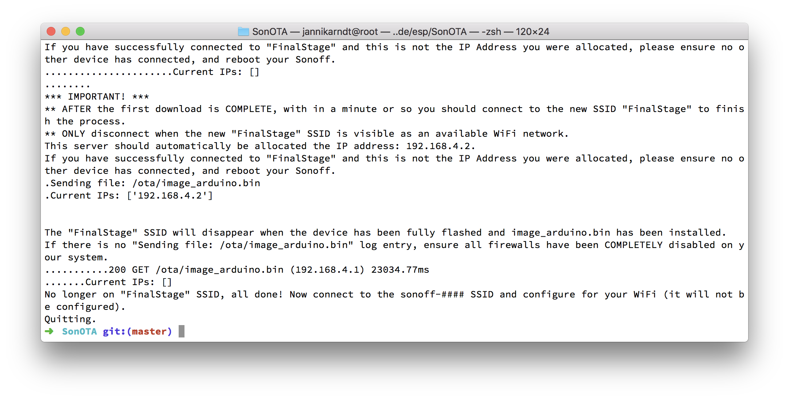
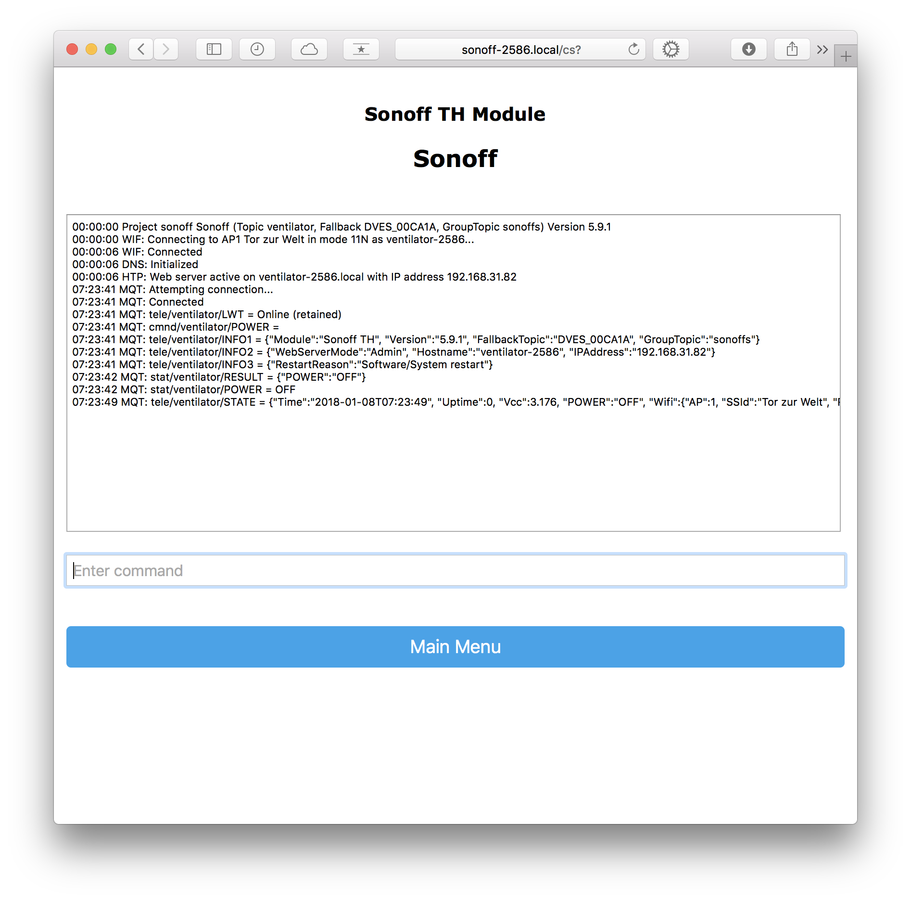

Sonoff takes the standard ESP8266 chip and adds two things:
- a casing with wifi and great connectors and
- a custom OS and an app to control the devices.
Unfortunately, the second addition also means that all communication goes through Sonoff’s servers. Here’s how to get rid of that. Without soldering or connecting anything.
The two repositories I’m using are
- https://github.com/arendst/Sonoff-Tasmota for the Tasmota operating system and
- https://github.com/mirko/SonOTA for a mechanism to flash the device “over the air”.
1. Get SonOTA Code
First you need to clone (=download) the repository and install the requirements. For this you need git and pip.
$ git clone https://github.com/mirko/SonOTA
$ cd SonOTA
$ pip3 install --user -r requirements.txt
2. Allow incoming and outgoing connections
Your mac will serve as a server. Therefore it must allow incoming connections. Go to System Settings > Security & Privacy > Firewall and turn the firewall off. Remember to turn it back on afterwards!
I also noticed LittleSnitch and TripMode trying to block connections. If you have them installed, put them into silent mode or turn them off.
3. Start SonOTA script
$ ./sonota.py
Current IPs: ['192.168.31.210']
Select IP address of the WiFi interface:
0: 192.168.31.210
Select IP address [0]: 0 # <= enter '0' and enter
WiFi SSID: Your SSID # <= no quotes
WiFi Password: *****

4. Put Sonoff into config mode
Press the button on the Sonoff device for ~7 seconds until the LED starts blinking rapidly.
If the LED is blinking three times short and then one time long, you need to hold the button for 7 seconds again, until it blinks rapidly. I had to do this for the Sonoff Touch.
5. Join Sonoff Wifi
In config mode, the Sonoff broadcasts its own wifi.
- Look for and connect to
ITEAD-100001XXXX - The password is
12345678

6. Let the script configure the sonoff
>> HTTP GET /10.10.7.1/device
# ...
>> HTTP POST /10.10.7.1/ap
# ...
~~ Provisioning completed
Starting stage2...
** The IP address of <serve_host> (192.168.31.210) is not assigned to any interface on this machine.
** Please change WiFi network to Tor zur Welt and make sure 192.168.31.210 is being assigned to your WiFi interface.
** This application should be kept running and will wait until connected to the WiFi...
......Current IPs: []
The device now joins your wifi and ends providing its own (ITEAD-100001XXXX). Your computer will most likely switch back to your usual wifi.
....Current IPs: ['192.168.31.210']
~~ Starting web server (HTTP port: 8080, HTTPS port 8443)
~~ Waiting for device to connect
# ...
<< HTTP POST /dispatch/device
200 POST /dispatch/device (192.168.31.213)
101 GET /api/ws (192.168.31.213)
<< WEBSOCKET OPEN
# ... (lots of "action": "update" payloads)
# ...
Sending file: /ota/image_user2-0x81000.bin # repeats a lot
# ...
~~~ device acknowledged our action request (seq 1515773926583) with error code 0
........................
*** IMPORTANT! ***
** AFTER the first download is COMPLETE, with in a minute or so you should connect to the new SSID "FinalStage" to finish the process.
** ONLY disconnect when the new "FinalStage" SSID is visible as an available WiFi network.
This server should automatically be allocated the IP address: 192.168.4.2.
If you have successfully connected to "FinalStage" and this is not the IP Address you were allocated, please ensure no other device has connected, and reboot your Sonoff.
7. Switch to FinalStage Wifi
If you have successfully connected to "FinalStage" and this is not the IP Address you were allocated, please ensure no other device has connected, and reboot your Sonoff.
..Current IPs: []
.Sending file: /ota/image_arduino.bin
.Current IPs: ['192.168.4.2']
The "FinalStage" SSID will disappear when the device has been fully flashed and image_arduino.bin has been installed.
If there is no "Sending file: /ota/image_arduino.bin" log entry, ensure all firewalls have been COMPLETELY disabled on your system.
............200 GET /ota/image_arduino.bin (192.168.4.1) 25854.05ms
..............Current IPs: []
No longer on "FinalStage" SSID, all done! Now connect to the sonoff-#### SSID and configure for your WiFi (it will not be configured).
Quitting.

8. Switch to sonoff-XXXX Wifi
- Joining this Wifi might take 3–4 minutes
- Remember the numbers!
- Goto http://192.168.4.1

- Enter your Wifi SSID and password
- Save
- The
sonoff-XXXXWifi will disappear and your computer will return to your usual wifi
9. Configure Device
- Goto http://sonoff-XXXX.local where the number is the one from step 8
- Go to Configuration > Configure Module and select the device type

10. Configure MQTT
The idea here is that you have an MQTT broker somewhere to exchange messages between your smart devices and an app to control them. I use homebridge on a Raspberry Pi, here is a tutorial for my setup.
If you want to try without a raspberry pi, you can run the broker on your computer:
brew install mosquitto
mosquitto
Username and Password defaults are empty.
If brew has problems linking mosquitto, try
sudo mkdir /usr/local/sbin
sudo chown -R `whoami`:admin /usr/local/sbin
brew link mosquitto
Now follow these steps to let your device send messages to your MQTT broker:
- Go to Configuration > Configure MQTT and enter the MQTT parameters:
- Host: e.g. your ip if MQTT is running locally
- Port: 1883
- Topic: Specific Topic, e.g.
bedroom_lights
- Restart
- Go to Console to check the connection 
You can use a program like MQTT.fx and subscribe to everything (“#”) to see how your devices communicate:

11. Create a smart home
Now that your lights, outlets, fans and what not talk to a message queue and receiver orders, you need something to control that. For example, setup a homebridge on a Raspberry Pi to use Apple Home from your iPhone, iPad or Apple Watch! Here’s how.